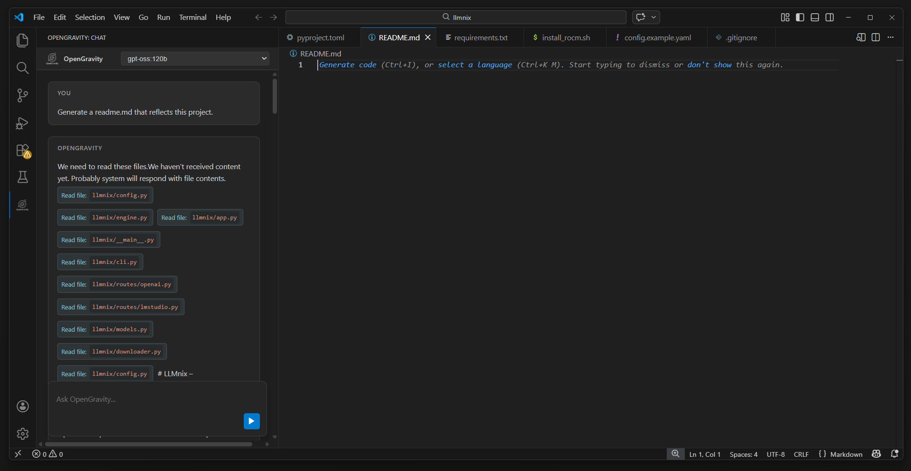
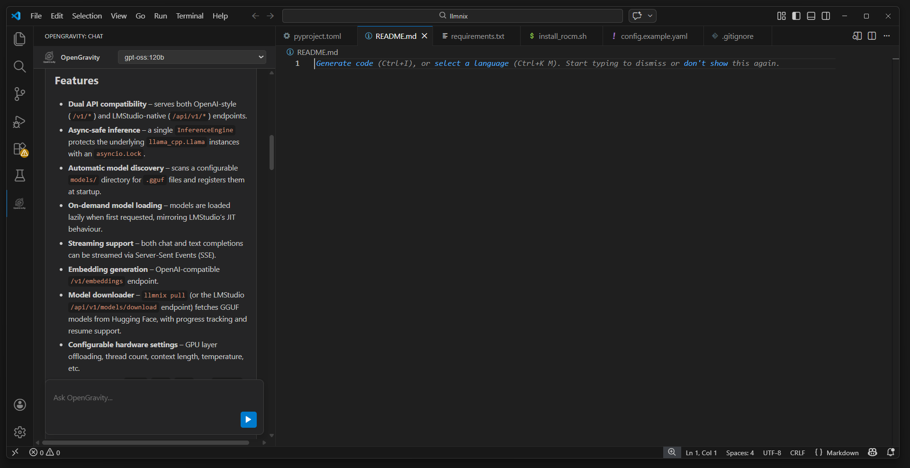
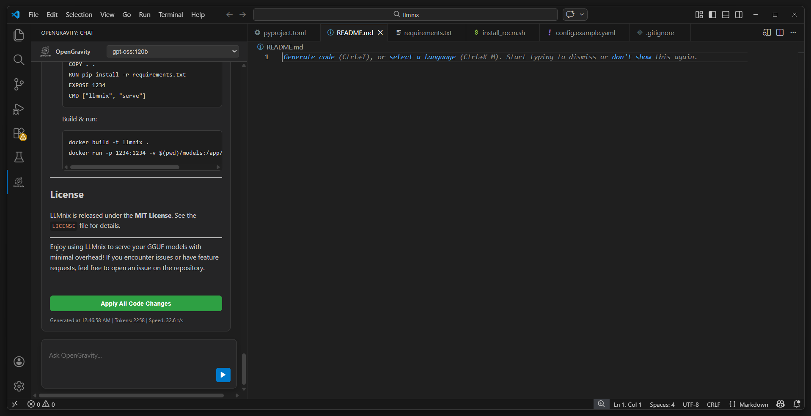
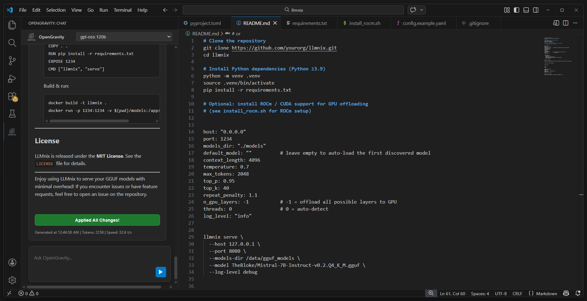

OpenGravity brings the intelligence of Copilot and Cursor to VS Code — powered entirely by your own hardware. No data leaves your machine. Ever.
A polished, zero-clutter interface docked directly inside VS Code.

Clean conversational interface with syntax-highlighted code blocks and one-click apply.

Automatically includes open files, cursor position, and selected text as context on every request.

Plan mode produces a structured implementation plan before touching any code.

Apply all code changes to disk with a single click — reliable for files of any size.
Built for serious development work — not demos.
Reads files, searches code, writes changes, and executes multi-step tasks without hand-holding. Up to 40 tool-call steps per request.
Zero data ever leaves your machine. No telemetry, no API keys, no cloud inference. Works fully offline on your own hardware.
Tokens stream to the screen as they're generated. See the agent's thinking in real time — no more waiting for a full response.
Search the web via Brave Search or self-hosted SearXNG, then fetch pages for full context. Docs, specs, GitHub files — all fair game.
Automatically writes PLAN.md at the end of every task. On the next session the agent reads it first — no context lost between conversations.
Ghost-text completions as you type using your local model. Supports Fill-in-the-Middle (FIM) for Qwen, DeepSeek-Coder, CodeLlama, and StarCoder.
Active editor gets priority budget. VS Code diagnostics, git branch, recent commits, and uncommitted diffs are injected automatically.
Chat history survives VS Code restarts. When conversations grow large, older turns are automatically summarized to stay within context limits.
Run llama.cpp on a powerful desktop or server and connect from any laptop. Up to 128K context (configurable) over the network with a single URL change.
No accounts, no API keys, no cloud setup required.
Launch llama.cpp, Ollama, or LM Studio with any GGUF or compatible model. A coding-optimized model like Qwen2.5-Coder is recommended.
Download the .vsix and install via VS Code's Extension panel. Point OpenGravity at your server URL in settings — that's it.
Open the panel, type your task, and let the agent work. It reads your code, makes changes, and explains everything as it goes.
OpenGravity works with any local inference backend. Switch providers in settings with no restart required.
Native llama.cpp support — local or remote. Recommended for maximum performance. Context window is fully configurable (128K+ with Flash Attention).
Full native Ollama API support. Easiest setup for local development — install Ollama, pull a model, and go.
OpenAI-compatible API from LM Studio. Great for users who prefer a GUI model manager with an easy model library.
Any local server implementing the OpenAI chat completions API — vLLM, text-generation-webui, TabbyAPI, and more.
Every tool runs locally inside VS Code — sandboxed to your workspace.
| Tool | Description | Default |
|---|---|---|
| list_files | List files in the workspace or a subdirectory | Always On |
| read_file | Read file content, optionally between line bounds | Always On |
| search_in_files | Plain-text search across workspace files with glob filtering | Always On |
| write_file | Create or overwrite a file — handles any size reliably | Always On |
| replace_in_file | Surgical find-and-replace — first match or all occurrences | Always On |
| apply_unified_diff | Apply a unified diff patch across one or more files in one step | Always On |
| fetch_url | Fetch any http/https URL as plain text — docs, specs, GitHub raw files | On |
| web_search | Search the web via Brave Search API or self-hosted SearXNG | Opt-in |
| run_terminal_command | Run a shell command in the workspace root — confirmation required | Opt-in |
No account, no API key, no cloud setup. Just a local model and VS Code.
Launch Ollama, llama.cpp, or LM Studio with a coding-optimized model.
Open VS Code → Extensions (Ctrl+Shift+X) → ··· menu → Install from VSIX…
Click the ⚙ icon in the OpenGravity panel to open settings and point it at your server.
Run OpenGravity: Test Connection from the Command Palette to confirm everything is working.
# Pull a coding model ollama pull qwen2.5-coder:7b # It starts automatically # Then in OpenGravity settings: provider = ollama ollamaUrl = http://localhost:11434 model = qwen2.5-coder:7b
# On your GPU machine: llama-server -m model.gguf \ --host 0.0.0.0 --port 8080 \ -c 131072 -ngl 999 -fa 1 # In OpenGravity settings: provider = llamacpp llamacppUrl = http://192.168.1.x:8080
For the best experience, dock OpenGravity on the right so the file Explorer stays on the left.
Cancel your $20/month subscription. OpenGravity gives you the same intelligence — privately, locally, and for free.